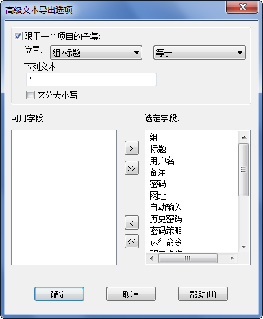

警告: 从一个 Password Safe 数据库输出敏感信息为一个文本文件存在严重的安全后果。 该操作将创建一个无保护的密码数据库副本。在不充分使用与其它作用后请适时删除该副本及擦除数据 (例如: 第三方 “粉碎” 文件公用程序)。输出的敏感数据事实上将绕开 Password Safe 程序的安全措施。
输出文本将:
输入文本假定存在:
目前标题行完整数据输出包含下列标记分隔的默认字段:
在输出数据时，可以使用“高级”功能排除这些标题行字段中的许多记录。 高级选项同样允许用户指定输出项目的一个子集，显示如下:

在输入数据时，提供标题行必须包括“栏目标题”精确匹配上面的任何一个。 如果存在“栏目标题”重复，在输入时只有最后一个数据被添加到项目； 如果一个“栏目标题”不匹配上面的任何一个，栏目中的数据在输入时将被忽略。 字段必须被字段分隔符分隔指定给输入文本对话框中的数据。
|
栏目标题/字段 |
注释 |
|
组/标题 |
如呈现，
组被句号 (‘.’) 分隔。标题字段不能空格、空缺或包含分隔符。 |
|
用户名 |
|
|
密码 |
不能空格或空缺。 |
|
网址 |
|
|
自动输入 |
|
|
创建时间 |
查看下列备注 1 |
|
修改密码时间 |
查看下列备注 1 |
|
最后访问时间 |
查看下列备注 1 |
|
密码失效日期 |
查看下列备注 1 |
|
记录修改时间 |
查看下列备注 1 |
|
历史密码 |
查看下列备注 2 |
|
备注 |
|
备注:
|
时间字段可为下列 3 个格式之一: |
位置:
asctime"(将时间和日期以字符串格式表示) 输出与格式 "3" 遵照 ISO 8601 标准输出。
|
历史密码
的表示在输出项目记录为一个文本字段，包括一个标题然后为所需旧密码项目数量: |
历史密码标题: